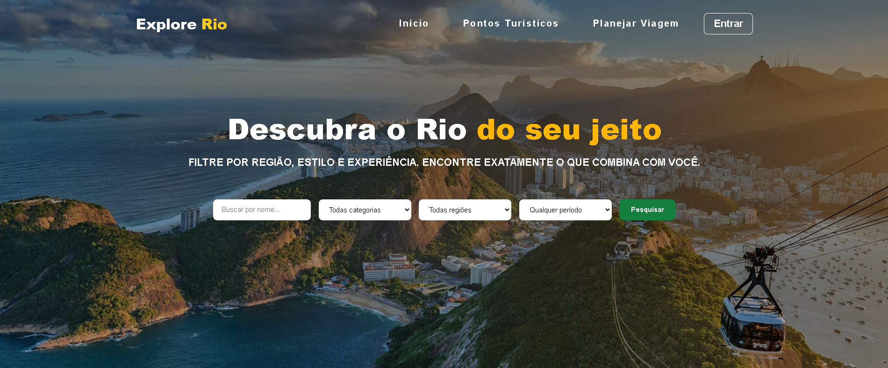

Projeto turístico que apresenta os principais pontos turísticos do Rio de Janeiro, permitindo criar roteiros personalizados. Usuários podem filtrar por categoria, região, período e duração,tornando o planejamento de viagens intuitivo e visual.
Total Tecnologias
Funcionalidades
